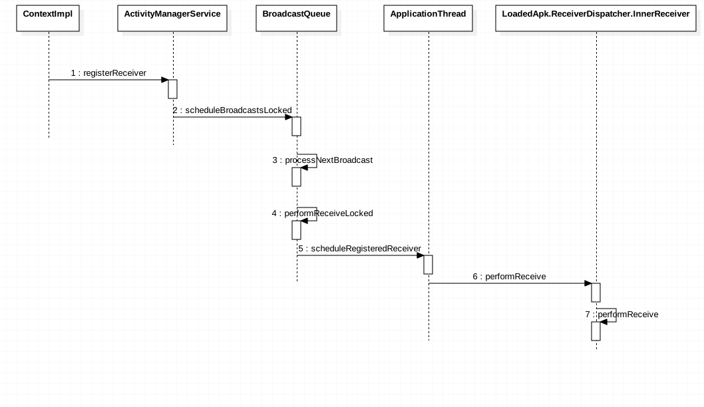
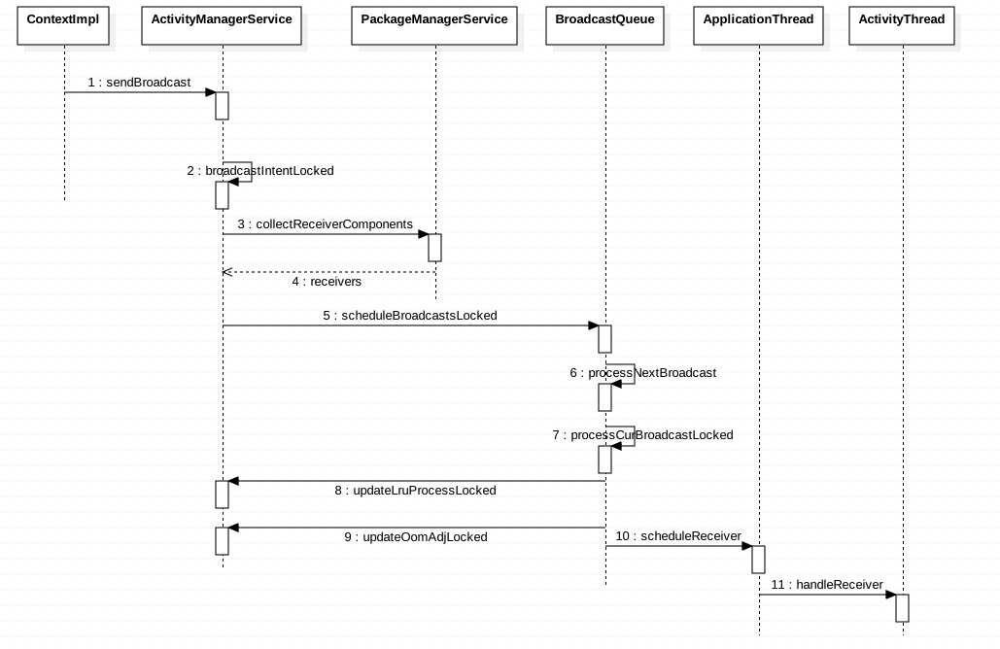

BroadcastReceiver
一般广播的使用，都是先注册，后发送。注册可以分为静态注册和动态注册
动态注册
ContextImpl.registerReceiver
ContextImpl.registerReceiverInternal
通过ContextImpl注册。创建IIntentReceiver，然后通过ActivityManagerService注册广播
AMS.registerReceiver
检查是否是sticky broadcast。搜索已注册的广播，如果不存在，创建并缓存。通过每个广播意图，获取对应的前台广播队列或者后台广播队列。然后将新的广播信息入列
BroadcastQueue.scheduleBroadcastsLocked
通过Handler来处理广播消息
BroadcastQueue.processNextBroadcast
首先处理所有无序广播，然后处理有序广播。之后调用performReceiveLocked
BroadcastQueue.performReceiveLocked
如果app进程还存在，那么直接通知ApplicationThread处理消息，以保证广播的顺序。最终都是调用IIntentReceiver
LoadApk.ReceiverDispatcher.InnerReceiver
通过IPC从AMS通讯回到LoadedApk
静态注册
在AndroidManifest.xml中注册广播。广播发出后，会经由PackageManagerService获取当前进程的所有配置信息，然后会做比对
广播发送
AMS.broadcastIntent
校验广播意图
AMS.broadcastIntentLocked
首先处理系统的广播消息。然后将广播消息入队列
BroadCastQueue.processNextBroadcast
如果当前进程还在，那么处理当前广播
BroadCastQueue.processCurBroadcastLocked
如果当前进程正在备份，那么忽略广播。更新进程状态，调整优先级。然后通知ApplicationThread处理广播
ActivityThread.handleReceiver
通过反射，创建广播对象，然后调用onReceive
时序图
注册

发送
